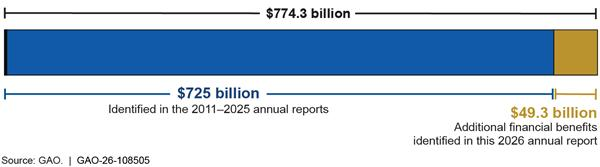
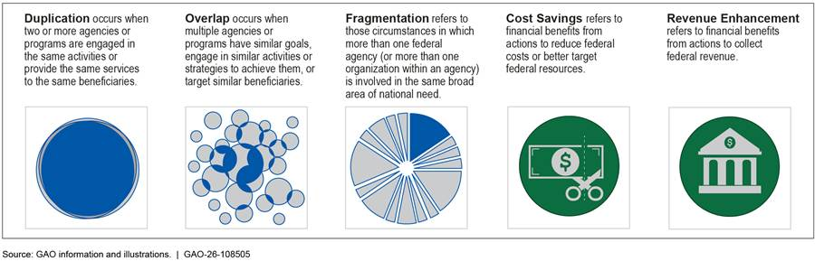
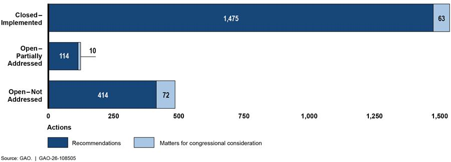
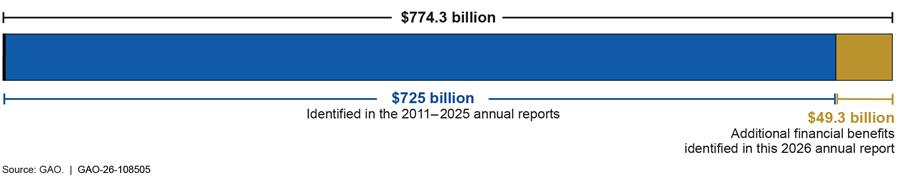
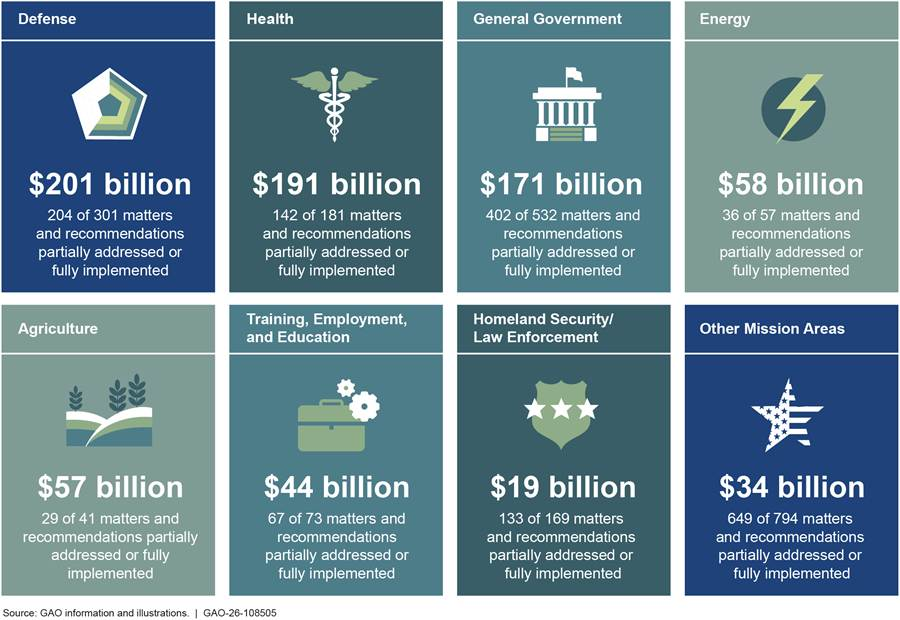
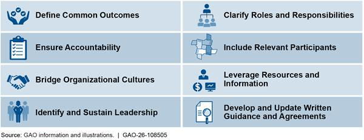
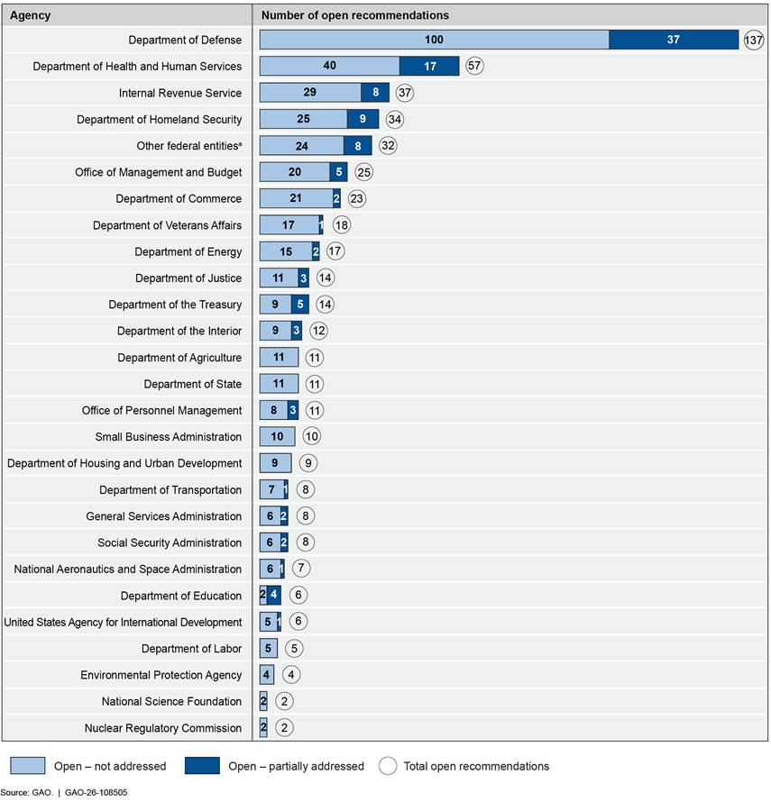

GAO 2026 ANNUAL REPORT
Report to Congressional Committees
May 2026
GAO-26-108505
United States Government Accountability Office
Highlights
A report to congressional committees
Contact: Jessica Lucas-Judy at lucasjudyj@gao.gov or Cardell Johnson at JohnsonCD1@gao.govWhat GAO Found
GAO identified 97 new matters for congressional consideration and recommendations to federal agencies to improve efficiency and effectiveness across the federal government. These matters and recommendations highlight various risks that are heightened when duplication, overlap, and fragmentation are not managed effectively. Risks include a lack of consistent information on program effectiveness, increased costs or inefficient use of resources, access barriers for users, and increased risks of fraud, waste, and abuse.
| Topic Area and description | Linked report number |
|---|---|
| VA and DOD Health Care Sharing Agreements. The Department of Veterans Affairs (VA) and Department of Defense (DOD) should evaluate agreements to share health care resources and identify more opportunities for sharing, which could better manage fragmented services, improve access to care, and potentially save tens of millions of dollars annually. |
GAO-25-107497 |
| Government-wide Anti-Scam Strategy. The Federal Bureau of Investigation should collaborate with other agencies on a strategy to combat consumer scams, which could strengthen agencies’ fraud prevention and detection capabilities and better manage fragmented and overlapping efforts. |
GAO-25-107088 |
| Employment Support for Older Workers. The Departments of Education and Labor should increase coordination on workforce development programs, which could help the departments better manage fragmentation in employment programs and improve mission delivery. |
GAO-26-107439 |
| Nuclear Waste Classification. The Department of Energy should evaluate opportunities to manage certain waste as non-high-level radioactive waste, which could help accelerate nuclear cleanup efforts, reduce environmental risks, and potentially save tens of billions of dollars. |
GAO-26-108018 |
Source: GAO. | GAO-26-108505
As of March 2026, Congress and agencies had fully or partially addressed 1,662 (77 percent) of the 2,148 matters and recommendations GAO identified from 2011 to 2026. This has resulted in financial and other benefits such as improved interagency coordination and reduced mismanagement, fraud, waste, and abuse.
In particular, these efforts have cumulatively resulted in about $774.3 billion in financial benefits, an increase of about $49.3 billion from GAO’s last report on this topic. These are rough estimates based on a variety of sources that considered different time periods and used different data sources, assumptions, and methodologies.

Further steps are needed to fully address the matters and recommendations GAO identified from 2011 to 2026. Of the 610 open matters and recommendations, 182 (about 30 percent) have the potential for financial benefits. Legislation was introduced in the 118th or 119th Congress to address 30 (about 37 percent) of the 82 open matters. As of February 2026, legislation had not been enacted to fully address these matters, and they remain open.
GAO estimates that fully addressing the remaining open matters and recommendations could yield financial benefits of one hundred billion dollars or more and improve governmental services, among other benefits.
| Topic area and description (GAO report number linked) | Mission | Potential financial benefitsa (Source of estimate) |
|---|---|---|
| Medicare Payments by Place of Service: Congress could realize additional financial benefits if it took steps to direct the Secretary of Health and Human Services to equalize payment rates between settings (e.g., physician offices and hospital outpatient departments) for all hospital outpatient departments, regardless of whether they are deemed on- or off-campus, for evaluation and management office visits and other services that the Secretary deems appropriate. (GAO‑16‑189) | Health | $156.9 billion over 10 years (Congressional Budget Office) |
| Medicare Part B: Congress should consider eliminating the incentive to prescribe more drugs or more expensive drugs than necessary to treat Medicare Part B beneficiaries at hospitals that participate in the 340B Drug Pricing Program. (GAO-15-442) | Health | Tens of billions of dollars (Congressional Budget Office) |
| Public-Safety Broadband Network: Congress should consider reauthorizing FirstNet—including different options for its placement—and ensure key statutory and contract responsibilities are addressed before current authorities sunset in 2027. (GAO-22-104915) | Information Technology | $15 billion over 15 yearsb (GAO analysis of the FirstNet Contract) |
| Individual Retirement Accounts: Congress should consider revisiting the use of Individual Retirement Accounts (IRA) to accumulate large balances and consider ways to improve the equity and efficiency of the existing tax expenditure on IRAs. (GAO-15-16) | General Government | Ten billion dollars or more (Joint Committee on Taxation and the Department of the Treasury) |
| Navy Shipbuilding: The Navy could achieve cost savings by improving its acquisition practices and ensuring that ships can be efficiently sustained. (GAO-20-2) | Defense | Billions of dollars (GAO analysis of Department of Defense data) |
| Student Loan Income-Driven Repayment Plans: The Department of Education should obtain data to verify income information for borrowers reporting zero income on Income-Driven Repayment applications. (GAO-19-347) | Training, Employment, and Education | More than $2 billion over 10 years (Congressional Budget Office) |
Source: GAO. | GAO-26-108505
Why GAO Did This Study
GAO is required to annually report on federal programs, agencies, offices, and initiatives—either within departments or government-wide—that have potentially duplicative goals or activities. As part of this work, GAO also identifies additional opportunities for greater efficiency and effectiveness that result in cost savings or enhanced revenue collection.
This report discusses new opportunities for achieving billions of dollars in potential financial benefits and improving the efficiency and effectiveness of a wide range of federal programs. It also evaluates the status of prior matters for congressional consideration and recommendations for federal agencies related to the Duplication and Cost Savings body of work.
In addition, this report provides examples of other, still open matters and recommendations where further implementation steps could yield significant financial and other benefits.
This is a work of the U.S. government and is not subject to copyright protection in the United States. The published product may be reproduced and distributed in its entirety without further permission from GAO. However, because this work may contain copyrighted images or other material, permission from the copyright holder may be necessary if you wish to reproduce this material separately.
Letter
May 12, 2026
Congressional Committees
Since 2011, we have issued 145 matters for Congress and 2,003 recommendations for federal agencies to eliminate, reduce, or better manage duplication, overlap, or fragmentation or realize financial benefits—cost savings or enhanced revenue collection.[1] Actions by Congress and federal agencies in these areas have resulted in about $774.3 billion in financial benefits. We estimate an additional one hundred billion dollars or more could be saved by fully implementing our remaining open matters and recommendations.[2]
In some cases, it may be appropriate or beneficial for multiple agencies or entities to be involved in the same programmatic or policy area due to the complex nature or magnitude of the federal effort. However, if duplication, overlap, and fragmentation are not effectively managed, they can lead to additional burden or confusion for people trying to use government services or to unnecessary costs or other inefficiencies for government agencies.
Congress and federal agencies can act to improve the efficiency and effectiveness of federal programs by maximizing services provided for a given level of resources. Opportunities exist across many areas of government activity to eliminate, reduce, or better manage duplication, overlap, or fragmentation, and achieve cost savings or revenue enhancements.
Figure 1 defines the terms we use in this work.

- Duplication
- Two or more agencies or programs perform the same activities or provide the same services to the same beneficiaries.
- Overlap
- Multiple agencies or programs have similar goals, engage in similar activities or strategies to achieve them, or target similar beneficiaries.
- Fragmentation
- More than one federal agency, or more than one organization within an agency, is involved in the same broad area of national need.
- Cost savings
- Financial benefits from actions that reduce federal costs or better target federal resources.
- Revenue enhancement
- Financial benefits from actions to collect federal revenue.
This report identifies 38 new topic areas where a broad range of federal agencies could achieve greater efficiency or effectiveness. For each area, we suggest matters for Congress, recommendations for federal agencies, or both to reduce, eliminate, or better manage duplication, overlap, or fragmentation or achieve other financial benefits.
In addition to identifying new topic areas, we continue to monitor the progress Congress and agencies have made in addressing matters and recommendations we previously identified (see sidebar).
This report is based upon work we previously conducted in accordance with generally accepted government auditing standards. See appendix I for more information on our scope and methodology.
New Opportunities Exist to Improve Efficiency and Effectiveness across the Federal Government
This report presents 97 matters for Congress and recommendations for federal agencies in 38 new topic areas to improve efficiency and effectiveness across the federal government.[3] See appendix II for the complete list of new topic areas.
Of the 38 new topic areas, 17 concern duplication, overlap, or fragmentation in government missions and functions. These topic areas highlight various risks that are heightened when duplication, overlap, and fragmentation are not managed effectively. These risks include a lack of consistent information on program effectiveness, increased costs or inefficient use of resources, access barriers for users, and increased fraud risks.
Lack of Consistent Information on Program Effectiveness. In some cases, we found that agencies could better manage duplicative, overlapping, or fragmented programs by consistently monitoring their programs’ effectiveness. Without a clear understanding of what is working and what is not, federal agencies and Congress lack the information they need to make changes or improvements and efficiently target resources. For example:
-
Organ Transplantation System. The Health Resources and Services Administration (HRSA) and the Centers for Medicare & Medicaid Services (CMS)—within the Department of Health and Human Services (HHS)—share responsibility for overseeing entities involved with organ transplantation, the leading form of treatment for patients with severe organ failure. In January 2026, we reported that HRSA and CMS’s action plan to help guide coordinated efforts to improve the organ transplantation system is missing key elements for measuring and realizing progress.[4] These include specific, actionable steps with milestone completion dates and markers for measuring the success of actions taken.
By working together to update the action plan with these important elements, these agencies may better manage fragmentation and improve the performance of the organ transplantation system—the system that is responsible for providing organs to save the lives of critically ill patients.
-
VA and DOD Health Care Sharing Agreements. The Department of Veterans Affairs (VA) and Department of Defense (DOD) have agreements to share health care resources, like surgery services, which help improve access to health care for over 18 million beneficiaries and may lower costs for the federal government. In June 2025, we reported that the departments do not evaluate the effectiveness of sharing agreements and largely rely on local officials to identify potential areas for new and expanded sharing, which may result in missed opportunities for sharing.[5]
By implementing a process to evaluate the effectiveness of sharing agreements and developing a process to identify new opportunities, as we recommended, VA and DOD could better manage fragmented services, improve patients’ access to care, and potentially save tens of millions of dollars annually.
Increased Costs or the Inefficient Use of Resources. Duplication, overlap, or fragmentation that is not well managed can increase program costs or lead to agencies’ inefficient use of resources. For example:
-
Federal Shared Services. The federal government can increase efficiency and reduce duplicative efforts by consolidating mission-support services—such as payroll or travel—within a smaller number of providers so these services can be shared among agencies. In February 2026, we found that relevant federal agencies had not filled key leadership roles vital to making strategic decisions about the future growth of shared services.[6] We also found that coordinating entities do not have comprehensive data on how well shared services are meeting agencies’ needs, including intended cost avoidances.
By helping to fill key leadership positions and collecting data to inform strategic decision-making, as we recommended, the Office of Management and Budget and the General Services Administration, as the shared service oversight and coordinating entities, could ensure that agencies are not unnecessarily duplicating services and potentially save tens of millions of dollars over 3 years.
-
Ship Industrial Base. The Navy relies on contracts with private companies—the “industrial base”—to build and, in many cases, repair ships, but they often struggle to complete this work on time. In February 2025, we found the Navy is investing billions of dollars into improving the industrial base for shipbuilding but is not fully coordinating on these investments, such as by centrally collecting or appropriately sharing some types of data, like data for submarine and surface ship investments.[7] Additionally, we found that the Navy developed plans for investing in the ship repair industrial base without assessing infrastructure needs.
Improving coordination on ship industrial base investments, to include central collection of data, sharing of information between relevant offices, and analysis of potential infrastructure investments, as we recommended, could help the Navy better prevent inefficient duplication and overlap and could potentially save tens of millions of dollars.
Access Barriers for Users. Duplication, overlap, and fragmentation have the potential to increase the difficulty that Americans face in accessing federal programs. For example:
-
Employment Support for Older Workers. Older workers face significant barriers to employment—such as demand for new skills and potential age discrimination. Employment support for these and other jobseekers is fragmented across dozens of federal programs, including workforce development programs administered by the Departments of Labor (DOL) and Education. In January 2026, we reported that individuals 55 and older who participated in these programs were less likely to find a job than younger participants.[8] We also reported that DOL had not focused on issues specific to older workers in its coordination with Education.
Increasing coordination, as we recommended, could help the departments better manage fragmentation in employment programs and improve the employment rates and earnings of older workers.
-
Public Health Emergency Preparedness. HHS leads the federal public health and medical preparedness for public health emergencies. In February 2026, we reported that HHS does not have a formal mechanism—such as written agreements, working groups, or joint exercises—to coordinate two key programs: (1) the Public Health Emergency Preparedness program, which supports state and local government health departments, and (2) the Hospital Preparedness Program, which supports communities’ health care systems.[9] Prior to 2020, these types of mechanisms existed to aid coordination between the two programs.
Developing such coordination mechanisms, as we recommended, would better manage fragmentation and improve federal support to health departments and health care systems as they prepare to respond to public health threats and emergencies.
Increased Fraud Risks. Fraud is a long-standing, significant issue facing federal programs.[10]All federal programs and operations are at risk for fraud. Our work has also shown that the risk of fraud is heightened in complex environments, including with duplicative, overlapping, or fragmented federal efforts. Just as federal programs are targeted by fraudsters, so too are everyday Americans. For example:
-
Government-wide Anti-Scam Strategy. Scams are a type of fraud that involve the use of deception or manipulation intended to achieve financial gain. They often cause individual victims to lose large sums of money—in some cases, their entire life savings. In April 2025, we reported that 13 agencies, including the Federal Bureau of Investigation (FBI), the Federal Trade Commission (FTC), and the Consumer Financial Protection Bureau (CFPB), engage in overlapping efforts to combat scams.[11] However, we found there is no government-wide, national strategy for combating scams, and these agencies do not collaborate with each other on collecting and reporting data on the prevalence of scams.
We recommended that the FBI lead the development of a government-wide strategy to organize and prioritize combating scam efforts and work with FTC and CFPB to improve data collection, and develop a single estimate of those affected by scams. Doing so could help position agencies to better manage fragmentation and help reduce consumer harm by strengthening prevention, detection, and public awareness efforts across agencies.
We also present 21 new topic areas where Congress or federal agencies could take action to reduce the cost of government operations or enhance federal revenue collections. For example:
-
Nuclear Waste Classification. The Department of Energy’s Office of Environmental Management (EM) is responsible for cleaning up radioactive waste from nuclear weapons production and energy research. In March 2026, we reported that the ambiguous statutory definition of high-level radioactive waste (HLW) affects EM’s ability to classify certain waste with relatively lower levels of radioactivity as waste types other than HLW.[12]These other waste types can generally be safely treated and disposed of more quickly and at much lower costs than HLW.
By convening a multidisciplinary panel to recommend statutory revisions to the HLW definition, Congress could receive expert input on an issue that has impeded EM’s cleanup mission for decades and exposes EM to litigation that would further delay progress. Evaluating opportunities to manage certain waste as non-HLW and communicating to Congress its plans to pursue them, as we recommended, would position EM to reduce environmental risks, accelerate cleanup, and potentially save tens of billions of dollars.
-
Puerto Rico Tax Incentives. The Internal Revenue Service (IRS) is responsible for ensuring that taxpayers moving to Puerto Rico who take advantage of tax incentives are still meeting their federal tax obligations. In December 2025, we reported that the average federal taxes paid by resident investor incentive recipients decreased significantly after they moved to Puerto Rico.[13] We identified gaps in IRS oversight in this area and recommended that IRS take actions to regularly obtain relevant data from Puerto Rico and improve compliance among this taxpayer population.
Implementing these recommendations would strengthen compliance and potentially generate millions of dollars in additional federal tax revenue.
Congress and Federal Agencies Continue to Address Matters and Recommendations Identified over the Last 16 Years, Resulting in Significant Benefits
Congress and federal agencies have addressed many of the matters and recommendations we have identified, as shown in figure 2 and table 1. As of March 2026, Congress and agencies had fully or partially addressed 1,662 (77 percent) of the 2,148 matters and recommendations. Of these, they had fully addressed 1,538 and partially addressed 124.

| Status | Number of matters (percentage) | Number of recommendations (percentage) | Total (percentage) |
|---|---|---|---|
| Closed – implemented | 63 (43%) | 1,475 (74%) | 1,538 (72%) |
| Open – partially addressed | 10 (7%) | 114 (6%) | 124 (6%) |
| Open – not addressed | 72 (50%) | 414 (21%) | 486 (23%) |
| Total | 145 (100%) | 2,003 (100%) | 2,148 (100%) |
Source: GAO. | GAO‑26‑108505
Actions Taken by Congress and Federal Agencies Led to Hundreds of Billions in Financial Benefits
As a result of steps Congress and agencies have taken in response to our work, we have identified approximately $774.3 billion in total financial benefits, including $49.3 billion identified in this 2026 annual report.[14] About $725 billion of the total benefits were identified in our 2011 – 2025 annual reports, as shown in figure 3.

These benefits have contributed to missions across the federal government, as shown in figure 4.

The figure reports financial benefits and the number of matters and recommendations partially addressed or fully implemented:
- Defense: $201 billion; 204 of 301 matters and recommendations.
- Health: $191 billion; 142 of 181.
- General Government: $171 billion; 402 of 532.
- Energy: $58 billion; 36 of 57.
- Agriculture: $57 billion; 29 of 41.
- Training, Employment, and Education: $44 billion; 67 of 73.
- Homeland Security/Law Enforcement: $19 billion; 133 of 169.
- Other Mission Areas: $34 billion; 649 of 794.
Table 2 highlights examples of results achieved over the past 16 years.
| Topic area (GAO report number linked) | Actions taken | Financial benefit |
|---|---|---|
|
Medicaid Demonstration Waivers (GAO‑02‑817, GAO‑08‑87, and GAO‑13‑384) |
The Centers for Medicare & Medicaid Services (CMS) implemented a policy change in May 2016 that will help ensure that Medicaid demonstrations are budget neutral to the federal government. Additionally, when setting demonstration spending limits moving forward, the agency is requiring that states’ base data reflect recent costs. |
Cost savings of approximately $169.8 billion in fiscal years 2016 through 2024, and billions of additional savings are possible, according to GAO analysis of CMS data. |
|
Federal Buying Power (GAO‑17‑164 and GAO‑21‑40) |
The Office of Management and Budget’s (OMB) Category Management initiative directed agencies across the federal government to buy more like a single enterprise, setting agency targets for using category management contracts including those it designated as Best-In-Class, beginning in fiscal year 2017, and reporting on agency performance against those targets beginning in fiscal year 2018. |
Cost savings of approximately $48.8 billion from fiscal years 2017 through 2021, and billions of additional savings are possible, according to OMB reporting. |
|
Economic Injury Disaster Loan Program (GAO‑21‑265 and GAO‑21‑387) |
The Small Business Administration (SBA) implemented actions to improve its oversight and reduce fraud risk for the Economic Injury Disaster Loan Program, including incorporating tax information as part of its validation process for loan applications to confirm that businesses existed on or before January 31, 2020, a requirement for program eligibility, and to verify business revenue. As a result, SBA flagged 3 million loan applications for manual review and referred 2.46 million loan applications to SBA’s Office of Inspector General for further investigation due to likely fraud. |
Cost savings of $16.6 billion, according to GAO analysis of SBA data. |
|
Paycheck Protection Program (GAO‑20‑625) |
The SBA implemented an oversight plan for its Paycheck Protection Program, including an automated screening system to identify potentially ineligible or fraudulent applicants and recipients. SBA applied similar oversight controls to identify potentially ineligible or fraudulent applicants in its other pandemic relief programs, including the Restaurant Revitalization Fund. |
Cost savings of approximately $15 billion from fiscal years 2020 through 2023, according to GAO analysis of SBA data. |
|
Crop Insurance (GAO‑07‑819T, GAO‑07‑944T, GAO‑09‑445, GAO‑17‑501, GAO‑23‑106228, and GAO‑24‑106086) |
The Department of Agriculture (USDA) annually enters into a reinsurance agreement with crop insurance companies that establishes the financial terms by which insurance companies are compensated. USDA renegotiated an agreement with new terms that reduced the compensation to the companies, to be consistent with market conditions. |
Cost savings of approximately $11.5 billion in fiscal years 2016 through 2024, and billions of additional savings are possible, according to GAO analysis of USDA data. |
|
Improper Payments (GAO‑07‑92, GAO‑11‑318SP, GAO‑13‑227, GAO‑22‑105715, and GAO‑23‑106556) |
In carrying out the Improper Payments Information Act of 2002 and its subsequent amendments, and the Payment Integrity Information Act of 2019, the Social Security Administration and the Department of Veterans Affairs, among others, reduced improper overpayments.a Additionally, in implementing statutory requirements for government-wide financial statement audits, the Department of Defense took steps to identify and stop improper payments before they are paid.b Agencies could realize additional benefits as they annually identify and review programs and activities that may be susceptible to significant improper payments and take corrective actions to reduce overpayments. |
Cost savings of approximately $7.9 billion from fiscal years 2020 through 2024, according to GAO and agency data, and billions of additional savings are possible, according to GAO. |
|
DOE's Treatment of Hanford’s Low-Activity Waste (GAO‑22‑104365) |
The Department of Energy (DOE) finalized an agreement in January 2025 with the Environmental Protection Agency and Washington State that includes plans for DOE to treat a portion of Hanford’s low-activity nuclear and hazardous waste using a safe, more cost-effective process. |
Cost savings of approximately $7.5 billion, and tens of billions of additional savings are possible, according to GAO analysis of data from DOE and independent organizations. |
|
DOE's Acceleration of Radioactivity Removal (GAO‑19‑339) |
From February 2022 through March 2025, DOE accelerated the removal of more radioactivity from waste storage tanks at the Savannah River Site in South Carolina over a 3-year period than what was completed over the previous 8-year period. |
Cost savings of approximately $5 billion from fiscal year 2022 through 2025, and hundreds of millions of additional savings are possible if DOE takes a risk-informed approach to other aspects of its nuclear cleanup mission, according to GAO analysis of data from DOE. |
|
Missile Defense (GAO‑22‑105075) |
The Missile Defense Agency (MDA) signed a memorandum of agreement with the Space Development Agency (SDA) in August 2022. The agreement assigned responsibility for development of operational satellite constellations to SDA, avoiding the risk of inefficient duplication and overlap arising from two agencies developing similar capabilities. They will now work together through a combined program office, with MDA providing requirements and SDA delivering the capability. |
Cost savings of approximately $3.8 billion from fiscal years 2023 through 2029, according to GAO analysis of agency data. |
|
Medicare Advantage (GAO‑12‑51) |
Congress took steps to increase the minimum adjustment made for differences in diagnostic coding patterns between Medicare Advantage plans and traditional Medicare providers, which reduced excess payments by CMS to Medicare Advantage plans for beneficiaries’ care.c CMS could realize additional financial benefits by modifying the methodology for calculating the adjustment made for differences in diagnostic coding patterns between Medicare Advantage plans and traditional Medicare providers. For example, CMS could incorporate more recent data, account for all relevant years of coding differences and incorporate the effect of coding difference trends to better ensure an accurate adjustment in future years that may be above the minimum adjustment. |
Cost savings of approximately $2.5 billion from fiscal years 2013 through 2022, according to CBO, and tens of billions of dollars of additional savings are possible, according to the Medicare Payment Advisory Commission. |
Source: GAO. | GAO‑26‑108505
Other Benefits Resulting from Actions Taken by Congress and Federal Agencies
Implementing our matters and recommendations often results in other benefits, such as more effective government through improved interagency coordination; improvements in major government programs or agencies; reduced mismanagement, fraud, waste, and abuse; and increased assurance that programs comply with internal guidance. The following examples illustrate some of these types of benefits.
-
Transition Assistance for At-Risk Service Members. In 2024, we recommended that DOD should, in coordination with interagency partners, such as DOL and VA, develop a plan to assess the helpfulness of warm handovers as a part of its overall assessment of the Transition Assistance Program.[15] A warm handover occurs when DOD connects a service member to a person in one of these agencies for additional assistance.
As of September 2025, DOD implemented this recommendation by developing a plan to survey participants in its Transition Assistance Program who received warm handovers about its helpfulness and to compare outcomes – such as income levels and employment–between service members who did and did not receive warm handovers. This plan allows DOD and its interagency partners to better manage fragmented efforts to improve assistance to service members who may be at risk for a difficult transition to civilian life.
-
Maternal Health Programs. In March 2024, we recommended that the Health Resources and Services Administration (HRSA) implement a documented process for program officials to coordinate the selection of performance measures across three programs aimed at addressing maternal and infant death rates in the United States.[16]
In response, as of February 2026, HRSA had developed a process to improve the alignment of performance measures across the three programs and to ensure that programs are coordinating on a biannual basis. This coordination helps the agency use the most appropriate evidence-based performance measures while also helping HRSA gather the strongest evidence across the programs to better manage fragmentation and understand their impact on reducing rates of maternal and infant death.
Action on Open Matters and Recommendations Could Yield Additional Benefits
Congress and federal agencies have implemented many of the 2,148 matters and recommendations we have identified since 2011. However, further steps are needed to fully address the 610 matters and recommendations that remain open. We estimate that one hundred billion or more dollars in additional financial benefits could be realized should Congress and agencies fully address these.[17] In addition, other improvements can be achieved.
Effective collaboration across federal agencies could help address many issues identified in this report. We have made recommendations to Congress and OMB that could strengthen interagency collaboration and help identify and reduce or better manage duplication, overlap, and fragmentation in federal programs.
- Interagency working groups. Interagency groups can be a tool for forging successful partnerships. However, a lack of, or ineffective collaboration can hinder progress. As shown in figure 5 below, we have developed eight leading practices for agencies to effectively work together on shared goals.[18] In February 2025, we recommended that Congress consider requiring that interagency groups formed to address high-risk and other key challenges develop and implement a collaboration plan incorporating GAO’s leading interagency collaboration practices.[19]

- Define common outcomes.
- Ensure accountability.
- Bridge organizational cultures.
- Identify and sustain leadership.
- Clarify roles and responsibilities.
- Include relevant participants.
- Leverage resources and information.
- Develop and update written guidance and agreements.
-
Federal program inventory. A comprehensive inventory of programs—with related funding and performance information—would be a critical tool to help decision-makers better identify and manage duplication, overlap, and fragmentation across the federal government. Moreover, it could facilitate efforts to streamline and consolidate service delivery.
In recent years, OMB has made some progress toward developing a complete inventory, which has been required since 2011.[20] For example, in January 2025, it updated and expanded the program inventory website to include spending and other information for over 2,600 programs.[21] However, in March 2026, we found that the inventory does not fully address 13 out of the 20 statutory requirements. For example, it does not yet include all programs, such as acquisitions, defense, or foreign assistance programs.[22] It also does not provide all required information, such as each program’s contributions to its agency’s mission and goals.
Moreover, we identified opportunities for OMB to improve the transparency and usefulness of the inventory.[23] These include disclosing known data quality issues and limitations, such as inactive programs being included in the inventory and missing spending data. In total, we made 17 recommendations to OMB related to implementing a complete inventory and enhancing its usefulness. OMB did not provide comments.
Without a complete and useful inventory, it is difficult to answer basic questions, such as how many programs support a given goal, which agencies administer them, what each program costs, and whether multiple programs are delivering similar services to the same communities.[24]
Open Duplication and Cost Savings Matters to Congress and Recommendations to Agencies
We identified 145 matters directed to Congress that have the opportunity to address duplication, overlap, and fragmentation, or achieve financial benefits.[25] Of these, 82 (57 percent) remained open as of March 2026. Legislation was introduced in the 118th or 119th Congress to address 30 (about 37 percent) of the open matters. However, as of February 2026, legislation had not been enacted to fully address these matters, and they remain open.
We also identified 2,003 recommendations directed to federal agencies. As shown in figure 6, these recommendations span the government. Of the 2,003 recommendations, 528 (26 percent) remained open as of March 2026. Six agencies—Department of Defense, Department of Health and Human Services, the Internal Revenue Service, Department of Homeland Security, Office of Management and Budget, and Department of Commerce—each have at least 20 open recommendations.

| Agency | Open — not addressed | Open — partially addressed | Total open |
|---|---|---|---|
| Department of Defense | 100 | 37 | 137 |
| Department of Health and Human Services | 40 | 17 | 57 |
| Internal Revenue Service | 29 | 8 | 37 |
| Department of Homeland Security | 25 | 9 | 34 |
| Other federal entitiesa | 24 | 8 | 32 |
| Office of Management and Budget | 20 | 5 | 25 |
| Department of Commerce | 21 | 2 | 23 |
| Department of Veterans Affairs | 17 | 1 | 18 |
| Department of Energy | 15 | 2 | 17 |
| Department of Justice | 11 | 3 | 14 |
| Department of the Treasury | 9 | 5 | 14 |
| Department of the Interior | 9 | 3 | 12 |
| Department of Agriculture | 11 | 0 | 11 |
| Department of State | 11 | 0 | 11 |
| Office of Personnel Management | 8 | 3 | 11 |
| Small Business Administration | 10 | 0 | 10 |
| Department of Housing and Urban Development | 9 | 0 | 9 |
| Department of Transportation | 7 | 1 | 8 |
| General Services Administration | 6 | 2 | 8 |
| Social Security Administration | 6 | 2 | 8 |
| National Aeronautics and Space Administration | 6 | 1 | 7 |
| Department of Education | 2 | 4 | 6 |
| United States Agency for International Development | 5 | 1 | 6 |
| Department of Labor | 5 | 0 | 5 |
| Environmental Protection Agency | 4 | 0 | 4 |
| National Science Foundation | 2 | 0 | 2 |
| Nuclear Regulatory Commission | 2 | 0 | 2 |
Open Matters and Recommendations to Address Duplication, Overlap, and Fragmentation
Table 3 shows selected topic areas where agencies can implement recommendations to eliminate, reduce, and better manage duplication, overlap, and fragmentation and achieve other benefits.
| Topic area and description (GAO report number linked) | Mission | Potential benefit |
|---|---|---|
| DHS Federal Research Centers: The Department of Homeland Security should ensure proposed research and development projects are reviewed and the results documented for potential unnecessary overlap, and update and disseminate to relevant entities its list of research and development activities at least quarterly. (GAO‑25‑106394) | Homeland Security/Law Enforcement | Better management of fragmented efforts among research and development centers could avoid unnecessarily expending resources |
| Defense Food Program: The Department of Defense should better manage fragmentation of nutrition programs and initiatives by establishing department-wide strategic goals, performance goals, and performance metrics for nutrition efforts. (GAO‑24‑106155) | Defense | Better management of the fragmented food system and assessment of progress toward improving the health of service members in support of U.S. military readiness |
| Strategic National Stockpile: Federal agencies responsible for the Strategic National Stockpile should clearly define their roles and responsibilities related to the national stockpile in a formal document and share that document with jurisdictions. (GAO‑24‑106260) | Health | Better management of fragmented assistance to jurisdictions requesting and receiving critical medical supplies during public health emergencies |
| Mental Health Programs for Transitioning Service Members: The Department of Veterans Affairs-Department of Defense Joint Executive Committee should assess the effectiveness of the departments’ programs and processes overall to better manage overlapping efforts to facilitate access to mental health services for service members transitioning to civilian life. (GAO‑24‑106189) | Health | Addressing duplicative or overlapping efforts between departments and better ensuring that service members and veterans have access to the mental health support they may need |
| Charitable Food Assistance: The U.S. Department of Agriculture should ensure that two of its agencies responsible for food bank delivery coordinate to better manage fragmentation and help streamline the lengthy process for resolving delivery issues. (GAO‑24‑106539) | Social Services | Better management of fragmentation by helping agencies more effectively resolve issues with food deliveries and help food banks focus on distributing food in their communities |
Source: GAO. | GAO‑26‑108505
Open Matters and Recommendations with Potential for Financial Benefits
Of the 610 open matters and recommendations, we identified 182 as having the potential to yield measurable financial benefits.[26] In 24 of these, we roughly estimate the magnitude of those benefits could exceed:
- one hundred billion dollars for one,
- ten billion dollars for four, and
- one billion dollars for 19.
For another 95, our rough estimates of magnitude are less than $1 billion. We were not able to estimate the value of the potential financial benefits for 63 matters and recommendations, due, for example, to a lack of data.
Further steps by Congress and federal agencies are needed to fully address the matters and recommendations that could yield significant financial benefits, as shown in table 4. Congress and agencies could potentially realize one hundred billion dollars or more in financial benefits by implementing these matters and recommendations.
| Topic area and description (GAO report number linked) | Mission | Potential financial benefitsa (Source of estimate) |
|---|---|---|
| Medicare Payments by Place of Service:b Congress could realize additional financial benefits if it took steps to direct the Secretary of Health and Human Services to equalize payment rates between settings (e.g., physician offices and hospital outpatient departments) for all hospital outpatient departments, regardless of whether they are deemed on- or off-campus, for evaluation and management office visits and other services that the Secretary deems appropriate. (GAO‑16‑189) | Health | $156.9 billion over 10 years (Congressional Budget Office) |
| Nuclear Waste Classification:b Evaluating opportunities to manage certain waste as non-high-level radioactive waste and communicating to Congress its plans to pursue them, as recommended, will position the Department of Energy’s Environmental Management office to reduce environmental risks and accelerate cleanup. (GAO‑26‑108018) | Energy | Tens of billions of dollars (GAO analysis of Department of Energy data) |
| Medicare Part B:b Congress should consider eliminating the incentive to prescribe more drugs or more expensive drugs than necessary to treat Medicare Part B beneficiaries at hospitals that participate in the 340B Drug Pricing Program. (GAO‑15‑442) | Health | Tens of billions of dollars (Congressional Budget Office) |
| Public-Safety Broadband Network:b Congress should consider reauthorizing FirstNet—including different options for its placement—and ensure key statutory and contract responsibilities are addressed before current authorities sunset in 2027. (GAO‑22‑104915) | Information Technology | $15 billion over 15 yearsc (GAO analysis of the FirstNet Contract) |
| Individual Retirement Accounts:b Congress should consider revisiting the use of Individual Retirement Accounts (IRA) to accumulate large balances and consider ways to improve the equity and efficiency of the existing tax expenditure on IRAs. (GAO‑15‑16) | General Government | Ten billion dollars or more (Joint Committee on Taxation and the Department of the Treasury) |
| Internal Revenue Service Enforcement Efforts:b Congress should consider enhancing Internal Revenue Service (IRS) enforcement and service capabilities by collecting tax revenue and facilitating voluntary compliance to help reduce the gap between taxes owed and paid. Actions could include expanding third-party information reporting. For example, rental real estate owners could be required to report for certain payments they make to service providers, such as contractors who perform repairs on their rental properties. In addition, Congress could grant IRS the explicit authority to establish professional requirements for paid tax preparers. (GAO‑08‑956, GAO‑09‑238, GAO‑14‑467T, GAO‑23‑105217) | General Government | Billions of dollars over 10 years (Joint Committee on Taxation and the Department of the Treasury) |
| Navy Shipbuilding: The Navy could achieve cost savings by improving its acquisition practices and ensuring that ships can be efficiently sustained. (GAO‑20‑2) | Defense | Billions of dollars (GAO analysis of Department of Defense data) |
| Disability and Unemployment Benefits:b Congress should consider passing legislation to require the Social Security Administration to offset Disability Insurance benefits for any Unemployment Insurance benefits received in the same period. (GAO‑14‑343SP) | Income Security | $2.2 billion over 10 years (Office of Management and Budget) |
| Student Loan Income-Driven Repayment Plans: The Department of Education should obtain data to verify income information for borrowers reporting zero income on Income-Driven Repayment applications. (GAO‑19‑347) | Training, Employment, and Education | More than $2 billion over 10 years (Congressional Budget Office) |
| Federal Employees Health Benefits Program: The Director of the Office of Personnel Management (OPM) should implement a monitoring mechanism to identify and remove ineligible family members from the Federal Employees Health Benefits program, as we recommended and as Congress has directed.d (GAO‑23‑105222) | Health | One billion dollars or more over 9 years (Congressional Budget Office) |
Source: GAO. | GAO‑26‑108505
We are sending copies of this report to the appropriate congressional committees and relevant federal agencies. In addition, this report is available at no charge on the GAO website at www.gao.gov.
This report was prepared under the coordination of Jessica Lucas-Judy, Director, Strategic Issues, who may be reached at LucasJudyJ@gao.gov, and Cardell Johnson, Managing Director, Strategic Issues, who may be reached at JohnsonCD1@gao.gov. Contact points for our Office of Congressional Relations and Media Relations may be found on the last page of this report.
//SIGNED//
Orice Williams Brown
Acting Comptroller General of the United States
List of Committees
-
- The Honorable Susan Collins
Chair - The Honorable Patty Murray
Vice Chair - Committee on Appropriations
United States Senate
- The Honorable Susan Collins
-
- The Honorable Lindsey Graham
Chairman - The Honorable Jeff Merkley
Ranking Member - Committee on the Budget
United States Senate
- The Honorable Lindsey Graham
-
- The Honorable Rand Paul, M.D.
Chairman - The Honorable Gary C. Peters
Ranking Member - Committee on Homeland Security and Governmental Affairs
United States Senate
- The Honorable Rand Paul, M.D.
-
- The Honorable Tom Cole
Chairman - The Honorable Rosa DeLauro
Ranking Member - Committee on Appropriations
House of Representatives
- The Honorable Tom Cole
-
- The Honorable Jodey Arrington
Chairman - The Honorable Brendan Boyle
Ranking Member - Committee on the Budget
House of Representatives
- The Honorable Jodey Arrington
-
- The Honorable James Comer
Chairman - The Honorable Robert Garcia
Ranking Member - Committee on Oversight and Government Reform
House of Representatives
- The Honorable James Comer
Appendix I: Objectives, Scope, and Methodology
Section 21 of Public Law 111-139, enacted in February 2010, requires us to conduct routine investigations to identify federal programs, agencies, offices, and initiatives with duplicative goals and activities within departments and government-wide.[27] This provision also requires us to report annually to Congress on our findings, including the cost of such duplication, with recommendations for consolidation and elimination to reduce duplication and specific rescissions (legislation canceling previously enacted budget authority) that Congress may wish to consider.
Our objectives in this report are to (1) identify potentially significant topic areas of (a) duplication, overlap, and fragmentation, or (b) opportunities for cost savings and enhanced revenues that exist across the federal government; (2) provide the implementation status on matters and recommendations identified; and (3) highlight examples of open matters directed to Congress and recommendations to federal agencies.
To present new topic areas of duplication, overlap, and fragmentation, this report compiles recent, publicly issued work not previously presented in our annual report, including all matters and recommendations to reduce or better manage duplication, overlap, and fragmentation.[28] The underlying work to examine programs and operations for these conditions, consider the potential positive and negative effects, and determine what, if any, actions Congress may wish to consider and agencies may need to take, are tailored to each report’s specific objectives. For example, we used our prior work identifying leading practices for interagency coordination and collaboration, and our work on evidence-based policymaking, to help identify opportunities for agencies to reduce or better manage duplication, overlap, and fragmentation and improve the effectiveness and efficiency of their efforts.[29]
To present new opportunities for cost savings and enhanced revenues, this report compiles recent, publicly-issued work not previously presented in an annual report, including all matters and recommendations with potential for positive net financial benefits to the federal government.[30] The underlying work used a variety of approaches, tailored to their objectives and context, to identify and estimate such benefits where possible. These benefits could occur for a variety of reasons, including efficiencies in program operations via direct cost savings, cost avoidance, better allocation of resources, or enhanced revenues. More detail on our methodology for estimating potential financial benefits is presented below.
To provide illustrative examples of open matters and recommendations that could potentially yield financial or other benefits, we selected matters and recommendations in a variety of topic areas and to a diverse set of federal agencies. These examples include matters and recommendations with nonfinancial benefits, as well as those with potential financial benefits of $1 billion or more.
We assessed the reliability of any computer-processed data that materially affected our findings, including cost savings and revenue enhancement estimates. The steps we take vary but are chosen to ensure the data are sufficiently reliable for the purposes for which they are used. We review published documentation about the data system and inspector general or other reviews of the data and may interview agency or outside officials to understand how the data are produced and any associated limitations. We may also electronically test data values against agency testimony and documentation or compare data to source documents or other sources to corroborate our findings. For new topic areas, specific information on data reliability is located in the related products.
Assessing the Status of Identified Matters and Recommendations
For this review, we provide the status on 2,313 matters and recommendations to address duplication, overlap, and fragmentation or potentially achieve financial benefits. This number combines 2,201 matters and recommendations included in our 2025 annual report, 14 matters and recommendations from other prior reports with newly identified financial benefits, and 98 matters and recommendations from recent work that are introduced in this report.[31]
To examine the extent to which Congress and federal agencies have implemented the 2,313 matters and recommendations associated with this report, we reviewed relevant legislation and agency documents (such as budgets, policies, guidance, and strategic and implementation plans) and obtained updates on the implementation status from officials at the relevant agencies from May 2025 through March 2026.[32]
Throughout this report, we present our analysis of implementation statuses as of March 2026. We used data from our internal performance monitoring and accountability systems.[33] The summary reports used to analyze implementation data were finalized on April 9, 2026.
We used the following criteria in assessing the status of matters and recommendations:
-
In assessing the status of matters for Congress, we applied the following criteria:
- “closed – implemented” means relevant legislation has been enacted and addresses the intent of the matter, or a federal agency has taken steps that address all of the matter, with or without relevant legislation;
- “open – partially addressed” means a relevant bill has passed a committee, the House of Representatives, or the Senate during the current congressional session, or relevant legislation has been enacted but only addressed part of the action needed; or a federal agency has taken steps to address part of the matter with or without legislation. At the beginning of a new congressional session, we reapply the criteria. As a result, the status of a matter may move from “open – partially addressed” to “open – not addressed” in a future report if, for example, relevant legislation is not reintroduced from the prior congressional session;
- “open – not addressed” means a bill may have been introduced but did not pass out of a committee, or no relevant legislation has been introduced; and
- “closed – no longer valid” means the matter is no longer relevant because of a change in circumstances.
-
In assessing the status of recommendations to agencies, we applied the following criteria:
- “closed – implemented” means the agency has completed all actions to implement the recommendation or when actions have been taken that essentially meet the recommendation’s intent;
- “open – partially addressed” means the agency has completed action(s) that contribute to the implementation of the recommendation, but has not yet completed all actions to implement the recommendation;
- “open – not addressed” means the agency has not yet taken any actions or has action(s) planned or underway, but not completed, to implement the recommendation; and
- “closed – no longer valid” means the recommendation is no longer relevant because of a change in circumstances.
Across the report, we present totals and percentages for all open and closed – implemented recommendations and matters within our scope. We exclude the 11 matters for congressional consideration and 154 recommendations to federal agencies with the status “closed-no longer valid.”
We also analyzed, to the extent possible, whether financial or other benefits have been realized as a result of implementing our matters and recommendations and updated potential financial benefits estimates to reflect realized benefits or changes in underlying assumptions or data, when appropriate. To determine realized financial and other benefits, we interviewed relevant agency and program officials and gathered and analyzed data on the net benefit of such actions. More detail on our methodology for estimating potential and realized financial benefits is presented below.
Methodologies for Determining Financial Benefits
Potential Financial Benefits
Potential financial benefits are benefits that could occur as a result of implementing our matters and recommendations.[34] To develop estimates of potential financial benefits, we collected and analyzed existing estimates and other data on costs and potential savings, to the extent they were available.[35]
Each estimate was reviewed by one of our technical specialists to ensure that estimates were based on reasonably sound methodologies. When possible, we present estimates with a precise dollar figure, reflecting more rigorous methodologies and greater confidence in the potential change resulting from implementation of the matter or recommendation. We used partial and often historic data and conservative assumptions about what may occur in the future to provide rough estimates of the magnitude of potential savings when more precise estimates were not possible. These notional estimates use a variety of approaches aligned to the specifics of the situation such as drawing from examples of identified cases, using benchmarks of change for similar programs, or assuming a small percentage of change may be achieved, often one percent.
There is a higher level of uncertainty for estimates of potential financial benefits that could accrue from actions on matters and recommendations not yet taken because these estimates are dependent on whether, how, and when agencies and Congress implement them, or due to a lack of sufficiently detailed data to make reliable forecasts. As a result, many estimates of potential financial benefits are notionally stated using terms such as millions, tens of millions, or billions to demonstrate a rough magnitude without providing a more precise estimate. Further, many of these estimates are not tied to specific time frames for the same reason.
Estimating potential benefits was not possible in some cases for a variety of reasons, including: (1) inability to predict the timing and nature of agency or congressional actions; (2) limited data on performance, funding, the extent of identified deficiencies, or potential costs associated with taking action; and (3) external factors such as changes to the economy.[36]
Realized Financial Benefits
To determine net financial benefits that have resulted from action on our findings, matters, and recommendations, we collected and analyzed any existing estimates and other data on costs and savings, to the extent they were available. Estimates of financial benefits rely on a variety of sources, including our analysis, Congressional Budget Office estimates, individual agencies, and others, and use different time frames, underlying assumptions, data quality, and methodologies.
While the implementation of our recommendations can produce a wide variety of improvements to program economy, effectiveness, efficiency, and equity, many of these improvements are difficult to measure or lack the data necessary to calculate financial benefits. For some actions, available data may only capture a portion of the realized benefits, either because of insufficient data or because additional benefits are expected.
We report the total financial benefits achieved through this work as a combination of the total savings reported in the previous annual report, which extend to the end of fiscal year 2024, and the net present value of financial benefits achieved in fiscal year 2025. To account for the imprecision resulting from differences among individual estimates, we calculate our total realized financial benefits rounded to the nearest $100 million.
This report is based upon work we previously conducted in accordance with generally accepted government auditing standards. Those standards require that we plan and perform the audit to obtain sufficient, appropriate evidence to provide a reasonable basis for our findings and conclusions based on our audit objectives. We believe that the evidence obtained provides a reasonable basis for our findings and conclusions based on our audit objectives.
Appendix II: New Duplication and Cost Savings Topic Areas
This appendix presents summaries for the 38 new topic areas in which we found opportunities for improvement in federal programs related to duplication, overlap, fragmentation, cost savings, or revenue enhancement. For more information on the current implementation status for each of the 97 newly added matters and recommendations, please see Duplication and Cost Savings Recommendations.
| Mission | Topic area | Category |
|---|---|---|
| Defense | Army Air and Missile Defense Systems | |
| Defense Medical Facilities | ||
| DOD Cyberspace Operations | ||
| DOD Dependence on Foreign Suppliers | ||
| F-35 Joint Strike Fighter | ||
| Military Moves | ||
| National Security Space Launch | ||
| Ship Industrial Base | ||
| Economic Development | SBA Disaster Loans | |
| Energy | Nuclear Waste Classification | |
| Nuclear Waste Disposal Planning | ||
| Oil and Gas Royalties | ||
| General Government | Commercial Shipbuilding | |
| Coronavirus Fiscal Recovery Funds | ||
| Duplicate Health Care Coverage | ||
| Federal Awards Fraud Prevention | ||
| Federal Broadband Programs | ||
| Fraud Risks in the Federal Employees Health Benefits (FEHB) Program | ||
| Government-wide Anti-Scam Strategy | ||
| Investigating Fraud Using Company Registry | ||
| IRS Use of AI | ||
| Modernizing Amended Employment Tax Returns | ||
| Puerto Rico Tax Incentives | ||
| Sales of Unneeded Real Property | ||
| SSA Death Data Costs | ||
| VA Acquisition Management | ||
| Health | Diagnostic Testing for Pandemic Threats | |
| Organ Transplantation System | ||
| Public Health Emergency Preparedness | ||
| VA and DOD Health Care Sharing Agreements | ||
| Homeland Security/Law Enforcement | Bureau of Prisons Halfway Houses | |
| Coast Guard Investigations | ||
| Non-Intrusive Inspection Systems | ||
| Income Security | VA Disability Exam Contracts | |
| Information Technology | DHS Human Resources IT | |
| Federal Shared Services | ||
| Social Services | Supplemental Nutrition Assistance Program (SNAP) Benefit Theft | |
| Training, Employment, and Education | Employment Support for Older Workers |
Icon key: see the definitions above.
Source: GAO information and illustrations. | GAO‑26‑108505
| Defense | |
|---|---|
| Topic | Underlying report, recommendation(s), and category |
| Army Air and Missile Defense Systems. Since 2021, the Department of the Army has ramped up its modernization of seven systems to better protect equipment, personnel, and facilities from threats like cruise missiles and rockets. In June 2025, we reported the Army had not fully implemented leading practices for product development in these modernization efforts, including the Integrated Battle Command System, an Army fire control system that links sensors and weapons. Implementing leading practices and using modern design tools, as we recommended, would help the Army better manage its modernization efforts and take full advantage of efficiencies that modern design tools like digital twins can provide, such as the ability to anticipate potential design flaws. Further, according to the Army’s estimate, it may be missing opportunities to reduce costs by tens of millions of dollars over the next 8 years as it fields the Integrated Battle Command System. |
Report: GAO‑25‑107491 Recommendation #: Army (3) |
| Defense Medical Facilities. The Department of Defense (DOD) realigned its medical facilities under the management of the Defense Health Agency (DHA) in November 2022 in an effort to: (1) create efficiencies, (2) lower cost, and (3) improve care for military service members and eligible beneficiaries. In April 2025, we reported that DHA had not determined the number of personnel resources needed or how business functions could be consolidated so that medical facilities could be managed effectively. Analyzing the number of personnel and functions needed under the new structure, as we recommended, could potentially save millions of dollars over 5 years and improve beneficiary care and efficiency for DHA, if even a 1 percent reduction in personnel and functions could be achieved. |
Report: GAO‑25‑107432 Recommendation #: DOD (2, 3, 4, 5) |
| DOD Cyberspace Operations. DOD conducts cyberspace operations to defend the nation, support allies and partners, and protect its information network from malicious cyber actors. In September 2025, we reported that the military services are, in some cases, providing similar training courses to their cyberspace operations personnel. Also, DOD has 23 cybersecurity service providers who are largely conducting the same activities and functions, that is, providing cybersecurity services and activities to DOD organizations. By consolidating DOD’s cybersecurity service providers and reducing unwarranted overlap of similar cyberspace training courses, as we recommended, DOD could potentially save millions of dollars. |
Report: GAO‑25‑107121 Recommendation #: DOD (1, 2) |
| DOD Dependence on Foreign Suppliers. DOD has reported that its dependence on adversarial sources for goods it procures is a mounting national security challenge. For example, these suppliers may cut off U.S. access to critical materials or provide “back doors” in their technology that serve as intelligence pathways. In July 2025, we found that DOD’s approach for mitigating foreign dependency risks in its supply chain is uncoordinated and fragmented across DOD, and the department’s efforts to improve supply chain visibility provide little insight into most suppliers. DOD has identified actions it can take to improve its ability to identify and mitigate foreign dependency risks, including adopting some leading commercial practices. Identifying resources, priorities, time frames, and leadership for implementing these actions, as we recommended, would help DOD better manage fragmentation and position itself to mitigate foreign dependency risks. |
Report: GAO‑25‑107283 Recommendation #: DOD (1, 2) |
| F-35 Joint Strike Fighter. Between 2021 and 2024, DOD paid contractors hundreds of millions of dollars in incentive fees—financial rewards for meeting deadlines and performance outcomes—to encourage on-time delivery of F-35 joint strike fighters. When federal agencies do not effectively manage contract incentive fees taxpayers are at risk of shouldering unnecessary costs. In September 2025, we found the structure of on-time delivery incentives allowed the contractors to deliver aircraft and engines late and still earn some of the fee. If DOD better aligned contract incentives fees to achieving desired production schedule outcomes, as we recommended, the F-35 program could avoid financially rewarding the contractors for late deliveries and incurring unnecessary costs. |
Report: GAO‑25‑107632 Recommendation #: DOD (3) |
| Military Moves. DOD arranges for the worldwide movement and storage of approximately 300,000 personal property shipments for service members and their families each year, at a cost of about $2 billion. DOD awarded the Global Household Goods Contract to a single commercial move manager in 2021 but terminated the contract for cause in June 2025 due to the contractor’s inability to perform the services specified in the terms and conditions of the contract. In September 2025, we reported that DOD did not have complete information regarding costs associated with the contract transition and had incurred unplanned transition costs and paid management fees for orders ultimately not completed by the contractor. Ensuring DOD has access to comprehensive information regarding program capacity, performance, and costs, as we recommended, could enable DOD to better manage costs associated with reforming the program and potentially save millions of dollars. |
Report: GAO‑25‑107771 Recommendation #: DOD (1) |
| National Security Space Launch. DOD has provided increased support over the last decade to commercial entities launching from federal ranges. In June 2025, we found limitations in DOD’s scheduling and management of payload processing—when the payload is integrated with the launch vehicle before it is transported to the launch pad. The lack of insight into the commercial satellite processing schedules of the providers it shares facilities with hinders DOD’s own payload coordination efforts. DOD has also struggled to accurately bill commercial entities for its direct and indirect costs because it does not have clear cost collection guidance for the support services it provides at launch ranges. Improving coordination of payload processing services and developing guidance for capturing costs, as we recommended, would allow DOD to better manage fragmentation and potentially recoup tens of millions of dollars over 5 years of projected launches. |
Report: GAO‑25‑107228 Recommendation #: DOD (1, 2, 3) |
| Ship Industrial Base. The Department of the Navy relies on contracts with private companies—the "industrial base"—to build and, in many cases, repair ships, but they often struggle to complete this work on time. In February 2025, we found the Navy is investing billions of dollars into improving the industrial base for shipbuilding but is not fully coordinating on these investments, such as by centrally collecting or appropriately sharing some types of data, such as for submarine and surface ship investments. Additionally, we found that the Navy developed plans for investing in the ship repair industrial base without assessing infrastructure needs. Improving coordination on ship industrial base investments, to include central collection of data, sharing of information between relevant offices, and analysis of potential infrastructure investments, as we recommended, could help the Navy better prevent inefficient duplication and overlap and could potentially save tens of millions of dollars. |
Report: GAO‑25‑106286 Recommendation #: Navy (1, 4), DOD (3) |
Icon key: see the definitions above.
Source: GAO information and illustrations. | GAO‑26‑108505
| Economic Development | |
|---|---|
| Topic | Underlying report, recommendation(s), and category |
| SBA Disaster Loans. Disaster loans from the Small Business Administration (SBA) can help survivors rebuild and recover from property and home damages. However, survivors sometimes receive financial assistance from other sources, such as other federal aid and insurance that can cause their compensation to exceed their eligible losses, resulting in a duplication of benefits. In May 2025, we reported that SBA: (1) could not determine whether or how cases of duplication were resolved or how much over-disbursement was recovered, and (2) did not have documented procedures outlining how its staff should ensure borrowers take corrective actions to fully resolve such cases. Enhancing data collection and accessibility, along with establishing documented procedures, as we recommended, would help SBA better manage cases of duplication and may achieve cost savings by ensuring that any duplicate funds are recovered. |
Report: GAO‑25‑107608 Recommendation #: SBA (1, 2) |
Icon key: see the definitions above.
Source: GAO information and illustrations. | GAO‑26‑108505
| Energy | |
|---|---|
| Topic | Underlying report, recommendation(s), and category |
| Nuclear Waste Classification. The Department of Energy (DOE)’s Office of Environmental Management (EM) is responsible for cleaning up radioactive waste from nuclear weapons production and energy research. In March 2026, we reported that the ambiguous statutory definition of high-level radioactive waste (HLW) affects EM’s ability to classify certain waste with relatively lower levels of radioactivity as waste types other than HLW. These other waste types can generally be safely treated and disposed of more quickly and at much lower costs than HLW. By convening a multidisciplinary panel to recommend statutory revisions to the HLW definition, Congress could receive expert input on an issue that has impeded EM’s cleanup mission for decades and exposes EM to litigation that would further delay progress. Evaluating opportunities to manage certain waste as non-HLW and communicating to Congress its plans to pursue them, as we recommended, would position EM to reduce environmental risks, accelerate cleanup, and potentially save tens of billions of dollars. |
Report: GAO‑26‑108018 Recommendation #: Congress (1), DOE (1) |
| Nuclear Waste Disposal Planning. DOE estimates that completing its cleanup of radioactive and hazardous materials—including disposing of the resulting waste—at its nuclear sites will take decades. In May 2025, we reported that DOE had not assessed strategic alternatives for optimizing waste disposal plans across its sites or developed an integrated waste disposal plan to address obstacles to completing its nuclear cleanup mission. DOE also likely will need to negotiate with multiple regulators to address potential constraints to implementing optimal waste disposal plans. Developing an integrated waste disposal plan informed by optimization analyses and creating a forum to work with regulators, as we recommended, could save hundreds of millions of dollarsover DOE’s projected waste disposal timeframe by more efficiently disposing of waste. |
Report: GAO‑25‑107109 Recommendation #: DOE (3, 4, 5) |
| Oil and Gas Royalties. Royalty revenue from the sale of oil and gas produced on leased federal lands and waters provides billions of dollars for federal and state programs. The Department of the Interior’s Office of Natural Resources Revenue (ONRR) is responsible for ensuring that royalties are paid accurately and on time and for overseeing the adjustments and refund requests submitted by oil and gas companies. In November 2025, we reported that ONRR faces challenges with the adjustment process that may pose significant risks of lost federal revenues. Shortening the statutory timeframe for companies to submit royalty adjustments, as we recommended, could allow ONRR more time to review reported royalties to help better ensure accurate collections and potentially increase revenue by tens of millions of dollars over 10 years. |
Report: GAO‑26‑107669 Recommendation #: Congress (1) |
Icon key: see the definitions above.
Source: GAO information and illustrations. | GAO‑26‑108505
| General Government | |
|---|---|
| Topic | Underlying report, recommendation(s), and category |
| Commercial Shipbuilding. The Department of Transportation (DOT)’s Maritime Administration manages several financial assistance programs to encourage or improve U.S. shipbuilding and repairs, which are critical for national defense. These programs include two tax deferral programs, the Construction Reserve Fund Program and the Capital Construction Fund Program. In June 2025, we reported that certain aspects of the two tax deferral programs appeared duplicative, and Maritime Administration officials had not formally evaluated the potential duplication between the programs. We recommended that the Maritime Administration assess the potential effects of either combining the tax deferral programs or eliminating the underutilized Construction Reserve Fund Program—and develop a proposal for Congress, if warranted. By implementing our recommendation, the agency could determine if efficiencies, including reduced administrative costs, could be realized. |
Report: GAO‑25‑107304 Recommendation #: DOT (4) |
| Coronavirus Fiscal Recovery Funds. The Department of the Treasury is responsible for overseeing the use of the $350 billion of Coronavirus State and Local Fiscal Recovery Funds program distributed to tribal governments, states, localities, the District of Columbia, and U.S. territories to help cover costs of health and economic effects of the COVID-19 pandemic. Nearly all—$325.5 billion—of the $350 billion in State and Local Fiscal Recovery Funds was allocated to state and local governments. To ensure these funds are used for allowable purposes, Treasury developed reporting requirements for recipient governments to detail their uses of funds. In July 2025, we reported that Treasury initiated recoupment with recipients that had never submitted a report, based in part, on our ongoing reviews of the program and discussions with Treasury. We also reported that while Treasury’s procedures allow the department to initiate recoupment with recipients that do not comply with reporting requirements, the procedures do not require it based on specific timing or circumstances. As we recommended, developing and documenting procedures and guidance that identify the timing and circumstances under which Treasury will initiate recoupment from recipients that have not met reporting requirements could potentially save millions of dollars. |
Report: GAO‑25‑107909 Recommendation #: Treasury (1) |
| Duplicate Health Care Coverage. Federally funded health care programs for eligible individuals under 65 years of age, including Medicaid, the Children’s Health Insurance Program, and the health insurance marketplaces are susceptible to significant improper payments, including fraud. In September 2025, we reported that for fiscal year 2023, the federal government and six selected states paid health insurance entities at least $1.6 billion in potential overpayments or fraud for duplicate health care coverage or benefits. The payments were made on behalf of approximately 500,000 individuals who were simultaneously enrolled or receiving benefits across multiple states. If the Centers for Medicare & Medicaid Services (CMS) strengthens controls to help detect and prevent duplicate enrollment within and across the programs, as we recommended, it could potentially prevent tens of millions of dollars or more of improper payments annually. |
Report: GAO‑25‑106976 Recommendation #: CMS (1, 2, 3) |
| Federal Awards Fraud Prevention. Proactively managing fraud risk in federal programs ensures that taxpayer dollars and government services serve their intended purposes. In December 2025, we found the Department of Energy (DOE), the Environmental Protection Agency (EPA), and the Department of Health and Human Services (HHS) had not fully designed and documented their policies and procedures consistent with our leading practices to oversee and prevent fraud, waste, and abuse. We recommended that DOE and HHS design and document procedures to perform fraud risk assessments and EPA establish a Senior Management Council to assess and monitor internal control deficiencies. By strengthening their policies, procedures, and oversight, DOE, EPA, and HHS could potentially achieve cost savings by decreasing the risk of fraud, waste, and abuse of federal resources. |
Report: GAO‑26‑107444 Recommendation #: DOE (2), EPA (7), HHS (8) |
| Federal Broadband Programs. Congress has appropriated billions of dollars in federal funding for programs that support expanding broadband, an essential service, to the millions of Americans that do not have access. Administration of the bulk of this funding is fragmented across the Federal Communications Commission (FCC), National Telecommunications and Information Administration (NTIA), the U.S. Department of Agriculture (USDA), and Treasury. In April 2025, we reported on gaps in these agencies’ efforts to collaborate, such as not clearly defining how coordination efforts would be implemented and not documenting a formal process for avoiding duplicate funding. Strengthening their coordination, as we recommended, would position the agencies to better manage fragmentation and could reduce the risk of potentially duplicative funding by ten million dollars or more. |
Report: GAO‑25‑107207 Recommendation #: FCC (4, 5, 6), NTIA (7, 8, 9), USDA (10, 11, 12), Treasury (13, 14) |
| Fraud Risks in the FEHB Program. The Office of Personnel Management (OPM) is responsible for managing fraud risks in the Federal Employees Health Benefits (FEHB) program, which provided health insurance benefits to more than 8.2 million individuals at a cost of about $70 billion in fiscal year 2024. In July 2025, we found that OPM had not assessed the full range of fraud risks facing the program, such as ineligible providers, kickbacks, and identity theft. Assessing the full range of fraud risks facing the program, as we recommended, may lead to changes in anti-fraud controls that would better position OPM to mitigate these risks. In turn, changes in anti-fraud controls may lead to cost savings by preventing, detecting, and responding to fraud and related improper payments in the program. |
Report: GAO‑25‑106885 Recommendation #: OPM (3) |
| Government-wide Anti-Scam Strategy. Scams are a type of fraud that involve the use of deception or manipulation intended to achieve financial gain. They often cause individual victims to lose large sums of money—in some cases, their entire life savings. In April 2025, we reported that 13 agencies including the Federal Bureau of Investigation (FBI), the Federal Trade Commission (FTC), and the Consumer Financial Protection Bureau (CFPB) engage in overlapping efforts to combat scams. However, we found there is no government-wide, national strategy for combating scams and these agencies do not collaborate with each other on collecting and reporting data on the prevalence of scams. We recommended that the FBI lead the development of a government-wide strategy to organize and prioritize combating scam efforts, work with FTC and CFPB to improve data collection, and develop a single estimate of those affected by scams. Doing so could help position agencies to better manage fragmentation and help reduce consumer harm by strengthening prevention, detection, and public awareness efforts across agencies. |
Report: GAO‑25‑107088 Recommendation #: FBI (1, 4, 9), FTC (2, 10), CFPB (3, 8) |
| Investigating Fraud Using Company Registry. Treasury administers a registry that certain foreign companies must use to disclose identifying information about their ownership structure (“beneficial ownership”) to aid law enforcement agencies investigating fraud and other financial crimes. In April 2025, we found instances of financial losses to the government through grants, contracts, and eligibility misrepresentations have ranged between $150,000 and $93 million. We reported that Treasury has not communicated information about access and data retrieval with Offices of Inspectors General (OIG) so that they may use the registry in their investigations into fraud in federal programs. Improved communications between Treasury and OIGs, as we recommended, could enhance oversight of federal programs. Access to beneficial ownership information for foreign companies could potentially save time during OIG fraud investigations and millions of dollars if even one loss of average size could be avoided. |
Report: GAO‑25‑107143 Recommendation #: Treasury (1) |
| IRS Use of AI. The Internal Revenue Service (IRS) rapidly expanded its use of AI between 2022 and 2025 and uses it for various purposes across the agency, such as assisting with audit selection and taxpayer services. In March 2026, we reported that several entities have oversight of individual AI use cases. None of the entities were responsible for managing AI investments across the agency, resulting in some instances of overlap and the risk of duplication among use cases. Increasing coordination and collaboration between entities using AI, as we recommended, would help IRS better manage these fragmented efforts and could potentially save one million dollars or more if even one similar overlapping use case is avoided or better leveraged. |
Report: GAO‑26‑107522 Recommendation #: IRS (6) |
| Modernizing Amended Employment Tax Returns. Manually processing tax returns is expensive and time consuming for IRS. In February 2026, we reported that IRS manually processes electronically filed amended employment tax returns. Including these returns in IRS’s modernization efforts for processing and data capture, as we recommended, could help reduce the current correspondence backlog and reduce processing costs. In turn, this could reduce errors and allow more timely processing of taxpayer refunds. It could also help prepare IRS for any future surge in tax credit claims on amended returns, particularly should legislation again provide emergency relief through the employment tax system. If IRS automates processing amended employment tax returns, it could save millions of dollars over 5 years. |
Report: GAO‑26‑107456 Recommendation #: IRS (2) |
| Puerto Rico Tax Incentives. IRS is responsible for ensuring that taxpayers moving to Puerto Rico who take advantage of tax incentives are still meeting their federal tax obligations. In December 2025, we reported that the average federal taxes paid by resident investor incentive recipients decreased significantly after they moved to Puerto Rico. We identified gaps in IRS oversight in this area and recommended that IRS take actions to regularly obtain relevant data from Puerto Rico and improve compliance among this taxpayer population. Implementing these recommendations would strengthen compliance and potentially generate millions of dollars in additional federal tax revenue. |
Report: GAO‑26‑107225 Recommendation #: IRS (1, 2, 3) |
| Sales of Unneeded Real Property. The General Services Administration (GSA) assists federal agencies in disposing of unneeded real property and has taken steps to accelerate the disposal of certain properties that cost the federal government millions of dollars annually to maintain. In April 2026, we reported that GSA: (1) did not establish performance goals to assess its accelerated approach, including goals for avoided operation and maintenance costs to be achieved through disposals, and (2) did not evaluate its recent use of commissioned private brokers against its other sales methods. By establishing targeted and measurable performance goals and evaluating its use of broker-led sales compared to other sales methods, as we recommended, GSA could help ensure timely disposal outcomes, select the most efficient and effective method for future sales, and potentially avoid tens of millions of dollars of costs over 10 years. |
Report: GAO‑26‑107760 Recommendation #: GSA (1, 3) |
| SSA Death Data Costs. The Social Security Administration (SSA) is required to maintain and share death data it receives from states in accordance with certain statutory requirements, including for the purpose of avoiding improper payments. SSA must compensate states for providing this data (42 U.S.C. § 405(r)). In February 2026, we reported that SSA’s payments to states for death data had increased significantly under new contracts, and SSA had not obtained required cost information from states. By implementing our recommendations, SSA would help ensure it has information it needs to determine whether the current pricing structure reflects statutorily authorized costs, potentially saving one million dollars or more over 5 years. |
Report: GAO‑26‑107181 Recommendation #: SSA (1, 2) |
| VA Acquisition Management. In fiscal year 2024, the Department of Veterans Affairs (VA) obligated more than $65 billion on contracts for goods and services that fall under the federal government’s category management initiative to coordinate procurement and leverage the government’s buying power. In September 2025, we found that VA had met most process-based category management goals but did not (1) set or track outcome-based goals, (2) fully implement its category management policy or processes, or (3) develop vendor management plans to address supply base risks. VA could realize additional benefits of category management by establishing category-specific goals for cost avoidance and budget savings and establishing an entity to oversee VA’s category management initiative, as we recommended. If VA achieves 1 percent savings by implementing our recommendations to improve its category management initiative, VA could save hundreds of millions of dollars over 10 years. |
Report: GAO‑25‑107398 Recommendation #: VA (1, 2, 3, 4, 5, 6) |
Icon key: see the definitions above.
Source: GAO information and illustrations. | GAO‑26‑108505
| Health | |
|---|---|
| Topic | Underlying report, recommendation(s), and category |
| Diagnostic Testing for Pandemic Threats. Infectious diseases with pandemic potential—such as avian influenza—pose a threat to American lives, national security, and economic interests. Diagnostic testing efforts are fragmented across numerous Department of Health and Human Services (HHS) agencies and other federal agencies, as well as public, private, and nonprofit stakeholders. In June 2025, we found that HHS had neither a national testing strategy nor a coordinating group that included all relevant partners to prepare for and coordinate diagnostic testing in future public health emergencies. Without these, HHS risks delays in implementing diagnostic testing to inform treatment and track an infectious disease during the next public health emergency, potentially endangering American lives. Establishing and maintaining a strategy or group with clear roles and responsibilities, as we recommended, would better manage this fragmentation by improving collaboration and strengthen HHS's ability to implement diagnostic testing for pandemic threats and other related public health threats. |
Report: GAO‑25‑106980 Recommendation #: HHS (1, 2, 3, 4) |
| Organ Transplantation System. The Health Resources and Services Administration (HRSA) and the Centers for Medicare & Medicaid Services (CMS)—within HHS—share responsibility for overseeing entities involved with organ transplantation, the leading form of treatment for patients with severe organ failure. In January 2026, we reported that HRSA and CMS developed an action plan to help guide coordinated efforts to improve the organ transplantation system; however, the plan is missing key elements important for measuring and realizing progress. These include specific, actionable steps with milestone completion dates and markers for measuring the success of actions taken. By working together to update the action plan with these important elements, these agencies may better manage fragmentation and improve the performance of the organ transplantation system—the system that is responsible for providing organs to save the lives of critically ill patients. |
Report: GAO‑26‑107434 Recommendation #: HHS (3) |
| Public Health Emergency Preparedness. HHS leads the federal public health and medical preparedness for public health emergencies. In February 2026, we reported that HHS does not have a formal mechanism—such as written agreements, working groups, or joint exercises—to coordinate two key programs: (1) the Public Health Emergency Preparedness program, which supports state and local government health departments, and (2) the Hospital Preparedness Program, which supports communities’ health care systems. Prior to 2020, these types of mechanisms existed to aid coordination between the two programs. Developing such coordination mechanisms, as we recommended, would better manage fragmentation and improve federal support to health departments and health care systems as they prepare to respond to public health threats and emergencies. |
Report: GAO‑26‑107507 Recommendation #: HHS (1) |
| VA and DOD Health Care Sharing Agreements. The Department of Veterans Affairs (VA) and Department of Defense (DOD) have agreements to share health care resources, like surgery services, which help improve access to health care for over 18 million beneficiaries and may lower costs for the federal government. In June 2025, we reported that the departments do not evaluate the effectiveness of sharing agreements and largely rely on local officials to identify potential areas for new and expanded sharing, which may result in missed opportunities for sharing. By implementing a process to evaluate the effectiveness of sharing agreements and developing a process to identify new opportunities, as we recommended, VA and DOD could better manage fragmented services, improve patients' access to care, and potentially save tens of millions of dollars annually. |
Report: GAO‑25‑107497 Recommendation #: VA (2, 4), DOD (3, 5) |
Icon key: see the definitions above.
Source: GAO information and illustrations. | GAO‑26‑108505
| Homeland Security/Law Enforcement | |
|---|---|
| Topic | Underlying report, recommendation(s), and category |
| Bureau of Prisons Halfway Houses. The Federal Bureau of Prisons (BOP) contracts with roughly 150 residential reentry centers (halfway houses) to help incarcerated individuals prepare to reenter their communities upon completion of their sentences. In February 2026, we reported that BOP lacked readily available data on how many individuals were eligible for transfer to halfway houses. Also, from October 2021 through March 2025, BOP paid over $12 million in late payment penalties to its contractors, including $5.6 million paid to halfway house contractors. By better monitoring eligibility dates and addressing the causes of late payments, as we recommended, BOP could help individuals transfer from prison to a halfway house on time, reduce recidivism, and potentially save tens of millions of dollars annually. |
Report: GAO‑26‑107353 Recommendation #: BOP (2, 6, 7) |
| Coast Guard Investigations. The Coast Guard Investigative Service (CGIS) and the Department of Homeland Security (DHS) Office of Inspector General (OIG) have some overlapping authorities to investigate complaints regarding the Coast Guard. In January 2026, we reported that CGIS and DHS OIG have not fully followed five out of six selected leading practices for collaboration. For example, CGIS and DHS OIG have not clarified expectations with each other for referring complaints in areas where they have overlapping investigative responsibilities. Fully following the selected practices to improve collaboration, as we recommended, would better position the agencies to prevent duplicative investigations and potentially achieve cost savings by ensuring effective and appropriate allocation of resources. |
Report: GAO‑26‑107341 Recommendation #: Coast Guard (2, 3, 5, 7), DHS OIG (4, 6) |
| Non-Intrusive Inspection Systems. To help detect illegal drugs and other contraband, U.S. Customs and Border Protection (CBP) uses non-intrusive inspection systems, such as X-ray machines, at land ports of entry to inspect travelers’ belongings and the contents of their vehicles without the need for unloading or disassembly. In September 2025, we found that CBP had not clearly defined two of its three key performance parameters for non-intrusive inspection systems—inspection rate and examination. Clearly defining its key performance parameters and using them for reporting, as we recommended, would help CBP achieve its objectives more efficiently and effectively. By better identifying system deficiencies and informing future procurement decisions, CBP could potentially save ten million dollars or more over 3 years. |
Report: GAO‑25‑107379 Recommendation #: CBP (1) |
Icon key: see the definitions above.
Source: GAO information and illustrations. | GAO‑26‑108505
| Income Security | |
|---|---|
| Topic | Underlying report, recommendation(s), and category |
| VA Disability Exam Contracts. The Department of Veterans Affairs (VA) uses contractors to conduct medical exams that are a source of evidence for determining veterans’ eligibility for disability compensation claims. In August 2025, we reported that VA provided financial incentives to contractors for high performance, but the department did not consistently verify the accuracy of its incentive calculations. We reviewed VA’s calculations and identified almost $2.3 million in overpaid incentives to contractors that resulted from uncorrected errors in fiscal year 2024. Implementing our recommendation to correct previous inaccurate incentive payments could help VA save one million dollars or more. |
Report: GAO‑25‑107483 Recommendation #: VA (2) |
Icon key: see the definitions above.
Source: GAO information and illustrations. | GAO‑26‑108505
| Information Technology | |
|---|---|
| Topic | Underlying report, recommendation(s), and category |
| DHS Human Resources IT. Since 2003, the Department of Homeland Security (DHS) has been working to modernize and consolidate duplicative human resources IT systems and paper-based processes. In September 2025, we reported that DHS had spent at least $262 million but made limited progress in achieving its goals for this effort, in part, because of gaps in its portfolio management practices. For example, officials estimated there are 89 human resources systems used across the department and its components but did not validate the accuracy and completeness of this number. We recommended DHS maintain a current and complete inventory of its human resources systems and update the alternatives analysis to reflect current replacement or consolidation options. Doing so would help the department more effectively reduce duplication and modernize the remaining human resources systems, potentially saving millions of dollars over 10 years. |
Report: GAO‑25‑107233 Recommendation #: DHS (2, 9) |
| Federal Shared Services. The federal government can increase efficiency and reduce duplicative efforts by consolidating mission-support services—such as payroll or travel—within a smaller number of providers so these services can be shared among agencies. In February 2026, we found that relevant federal agencies had not filled key leadership roles vital to making strategic decisions about the future growth of shared services, and that coordinating entities do not have comprehensive data on how well shared services are meeting agencies’ needs, including intended cost avoidances. By helping to fill key leadership positions and collecting data to inform strategic decision-making, as we recommended, the Office of Management and Budget (OMB) and the General Services Administration (GSA), as the shared service oversight and coordinating entities respectively, could ensure that agencies are not duplicating services and potentially save tens of millions of dollars over 3 years. |
Report: GAO‑26‑108014 Recommendation #: OMB (1, 2), GSA (3, 4) |
Icon key: see the definitions above.
Source: GAO information and illustrations. | GAO‑26‑108505
| Social Services | |
|---|---|
| Topic | Underlying report, recommendation(s), and category |
| SNAP Benefit Theft. In fiscal year 2025, the Supplemental Nutrition Assistance Program (SNAP) provided an estimated 43 million low-income people with about $96 billion in benefits to purchase food, according to the Congressional Budget Office. In September 2025, we found that states reported more than $320 million in stolen benefits from October 1, 2022, through December 20, 2024. We also found that the U.S. Department of Agriculture (USDA) had not comprehensively assessed the measures state agencies were implementing to help prevent thieves from stealing benefits from SNAP recipients’ Electronic Benefit Transfer cards. Conducting such an assessment, as we recommended, would help inform additional efforts to safeguard federal funds from fraud and ensure SNAP benefits are delivered to low-income recipients, as intended. |
Report: GAO‑25‑107964 Recommendation #: USDA (1) |
Icon key: see the definitions above.
Source: GAO information and illustrations. | GAO‑26‑108505
| Training, Employment, and Education | |
|---|---|
| Topic | Underlying report, recommendation(s), and category |
| Employment Support for Older Workers. Older workers face significant barriers to employment—such as demand for new skills and potential age discrimination—but employment support for these and other jobseekers is fragmented across dozens of federal programs, including workforce development programs administered by the Departments of Labor (DOL) and Education. In January 2026, we reported that individuals 55 and older who participated in these programs were less likely to find a job than younger participants. We also reported that DOL had not focused on issues specific to older workers in its coordination with Education. Increasing coordination, as we recommended, could help the departments better manage fragmentation in employment programs and improve the employment rates and earnings of older workers. |
Report: GAO‑26‑107439 Recommendation #: DOL (1) |
Icon key: see the definitions above.
Source: GAO information and illustrations. | GAO‑26‑108505
Appendix III: Contributing GAO Products for New Topic Areas
This appendix presents the highlights pages from each GAO product that contributed to the 38 new topic areas identified in this report.
Army Air and Missile Defense Systems
GAO. Army Modernization: Air and Missile Defense Efforts Would Benefit from Applying Leading Practices. GAO‑25‑107491. Washington, D.C.: June 17, 2025, reissued with revisions June 18, 2025.
Defense Medical Facilities
GAO. Defense Health Care: Actions Needed to Address Long-Standing Management Challenges with Medical Facilities. GAO‑25‑107432. Washington, D.C.: April 10, 2025.
DOD Cyberspace Operations
GAO. DOD Cyberspace Operations: About 500 Organizations Have Roles, with Some Potential Overlap. GAO‑25‑107121. Washington, D.C.: September 17, 2025.
DOD Dependence on Foreign Suppliers
GAO. Defense Industrial Base: Actions Needed to Address Risks Posed by Dependence on Foreign Suppliers. GAO‑25‑107283. Washington, D.C.: July 24, 2025.
F-35 Joint Strike Fighter
GAO. F‑35 Joint Strike Fighter: Actions Needed to Address Late Deliveries and Improve Future Development. GAO‑25‑107632. Washington, D.C.: September 3, 2025.
Military Moves
GAO. Military Moves: DOD Needs Better Information to Effectively Oversee Relocation Program Reforms. GAO‑25‑107771. Washington, D.C.: September 11, 2025.
National Security Space Launch
GAO. National Security Space Launch: Increased Commercial Use of Ranges Underscores Need for Improved Cost Recovery. GAO‑25‑107228. Washington, D.C.: June 30, 2025.
Ship Industrial Base
GAO. Shipbuilding and Repair: Navy Needs a Strategic Approach for Private Sector Industrial Base Investments. GAO‑25‑106286. Washington, D.C.: February 27, 2025.
SBA Disaster Loans
GAO. Disaster Loan Program: Enhanced Procedures and Data Needed to Address Duplication of Benefits. GAO‑25‑107608. Washington, D.C.: May 22, 2025.
Nuclear Waste Classification
GAO. Nuclear Waste Cleanup: Clarifying Definition of High-Level Radioactive Waste Could Help DOE Save Tens of Billions of Dollars. GAO‑26‑108018. Washington, D.C.: March 25, 2026.
Nuclear Waste Disposal Planning
GAO. Nuclear Waste: An Integrated Disposal Plan Could Help DOE Complete Its Cleanup Mission and Save Billions. GAO‑25‑107109. Washington, D.C.: May 29, 2025.
Oil and Gas Royalties
GAO. Oil and Gas Royalties: Congress and Interior Should Strengthen Safeguards to Better Ensure Accurate Payments. GAO‑26‑107669. Washington, D.C.: November 25, 2025.
Commercial Shipbuilding
GAO. Commercial Shipbuilding: Maritime Administration Needs to Improve Financial Assistance Programs. GAO‑25‑107304. Washington, D.C.: June 30, 2025.
Coronavirus Fiscal Recovery Funds
GAO. COVID-19 Relief: Treasury Could Improve Compliance Procedures and Guidance for State and Local Fiscal Recovery Funds. GAO‑25‑107909. Washington, D.C.: July 22, 2025.
Duplicate Health Care Coverage
GAO. Health Insurance: Enhanced Data Matching Could Help Prevent Duplicate Benefits and Yield Substantial Savings. GAO‑25‑106976. Washington, D.C.: September 25, 2025.
Federal Awards Fraud Prevention
GAO. Federal Awards: Selected Programs Did Not Fully Include Identified Practices to Enhance Oversight and Fraud Prevention. GAO‑26‑107444. Washington, D.C.: December 4, 2025.
Federal Broadband Programs
GAO. Broadband Programs: Agencies Need to Further Improve Their Data Quality and Coordination Efforts. GAO‑25‑107207. Washington, D.C.: April 17, 2025.
Fraud Risks in the FEHB Program
GAO. Federal Employees Health Benefits Program: OPM Should Take Timely Action to Mitigate Persistent Fraud Risks. GAO‑25‑106885. Washington, D.C.: July 17, 2025.
Government-wide Anti-Scam Strategy
GAO. Consumer Protection: Actions Needed to Improve Complaint Reporting, Consumer Education, and Federal Coordination to Counter Scams. GAO‑25‑107088. Washington, D.C.: April 8, 2025.
Investigating Fraud Using Company Registry
GAO. Fraud in Federal Programs: FinCEN Should Take Steps to Improve the Ability of Inspectors General to Determine Beneficial Owners of Companies. GAO‑25‑107143. Washington, D.C.: April 8, 2025, reissued with revisions June 9, 2025.
IRS Use of AI
GAO. Artificial Intelligence: IRS Actions Needed to Address Skills Gaps, Information Quality, and Strategic Management. GAO‑26‑107522. Washington, D.C.: March 24, 2026.
Modernizing Amended Employment Tax Returns
GAO. COVID-19 Relief: IRS Can Use Lessons Learned to Address and Prevent Improper Payments in Future Tax Programs. GAO‑26‑107456. Washington, D.C.: February 10, 2026.
Puerto Rico Tax Incentives
GAO. Puerto Rico: IRS Should Improve Oversight of Taxpayers Claiming Exemption from Federal Taxes. GAO‑26‑107225. Washington, D.C.: December 8, 2025.
Sales of Unneeded Real Property
GAO. Federal Real Property: GSA Should Create Goals to Ensure New Approach Saves Money and Accelerates Disposals of Unneeded Property. GAO-26-107760. Washington, D.C.: April 9, 2026.
SSA Death Data Costs
GAO. Social Security Death Data: Do Not Pay System Has Yielded Financial Benefits, but SSA Should Better Evaluate States’ Cost to Obtain Data. GAO‑26‑107181. Washington, D.C.: February 12, 2026.
VA Acquisition Management
GAO. VA Acquisitions: Leadership Accountability and Savings Goals Needed to Improve Purchasing Efficiency. GAO‑25‑107398. Washington, D.C.: September 2, 2025.
Diagnostic Testing for Pandemic Threats
GAO. Public Health Preparedness: HHS Needs a Coordinated National Approach for Diagnostic Testing for Pandemic Threats. GAO‑25‑106980. Washington, D.C.: June 4, 2025.
Organ Transplantation System
GAO. Organ Transplantation: HHS Action Needed to Improve Lifesaving Program. GAO‑26‑107434. Washington, D.C.: January 22, 2026.
Public Health Emergency Preparedness
GAO. Public Health Preparedness: Improved Coordination Needed for HHS’s Emergency Preparedness Programs. GAO‑26‑107507. Washington, D.C.: February 23, 2026.
VA and DOD Health Care Sharing Agreements
GAO. VA and DOD Health Care: Agreements to Share Services and Other Resources Should Be Evaluated. GAO‑25‑107497. Washington, D.C.: June 30, 2025.
Bureau of Prisons Halfway Houses
GAO. Bureau of Prisons: Actions Needed to Better Achieve Financial and Other Benefits of Moving Individuals to Halfway Houses on Time. GAO‑26‑107353. Washington, D.C.: February 11, 2026.
Coast Guard Investigations
GAO. Coast Guard Oversight: Actions Needed to Strengthen Collaboration on Investigations. GAO‑26‑107341. Washington, D.C.: January 21, 2026.
Non-Intrusive Inspection Systems
GAO. Land Port Inspections: CBP Should Improve Performance Data and Deployment Plans for Scanning Systems. GAO‑25‑107379. Washington, D.C.: September 15, 2025.
VA Disability Exam Contracts
GAO. VA Disability Benefits: Additional Oversight and Information Could Improve Quality of Contracted Exams for Veterans. GAO‑25‑107483. Washington, D.C.: August 18, 2025.
DHS Human Resources IT
GAO. Homeland Security: Actions Needed to Address Longstanding Gaps in Human Resources IT. GAO‑25‑107233. Washington, D.C.: September 4, 2025.
Federal Shared Services
GAO. Federal Shared Services: Adoption Challenges Underscore the Need for Consistent Leadership. GAO‑26‑108014. Washington, D.C.: February 3, 2026.
SNAP Benefit Theft
GAO. Nutrition Assistance: USDA Should Comprehensively Assess Benefit Theft Prevention Measures States Are Implementing. GAO‑25‑107964. Washington, D.C.: September 25, 2025.
Employment Support for Older Workers
GAO. Older Workers: Department of Labor Should Help State and Local Partners Share Promising Practices. GAO‑26‑107439. Washington, D.C.: January 29, 2026.
GAO’s Mission
The Government Accountability Office, the audit, evaluation, and investigative arm of Congress, exists to support Congress in meeting its constitutional responsibilities and to help improve the performance and accountability of the federal government for the American people. GAO examines the use of public funds; evaluates federal programs and policies; and provides analyses, recommendations, and other assistance to help Congress make informed oversight, policy, and funding decisions. GAO’s commitment to good government is reflected in its core values of accountability, integrity, and reliability.
Obtaining Copies of GAO Reports and Testimony
The fastest and easiest way to obtain copies of GAO documents at no cost is through our website. Each weekday afternoon, GAO posts on its website newly released reports, testimony, and correspondence. You can also subscribe to GAO’s email updates to receive notification of newly posted products.
Order by Phone
The price of each GAO publication reflects GAO’s actual cost of production and distribution and depends on the number of pages in the publication and whether the publication is printed in color or black and white. Pricing and ordering information is posted on GAO’s website, https://www.gao.gov/ordering.htm.
Place orders by calling (202) 512-6000, toll free (866) 801-7077, or TDD (202) 512-2537.
Orders may be paid for using American Express, Discover Card, MasterCard, Visa, check, or money order. Call for additional information.
Connect with GAO
Connect with GAO on X, LinkedIn, Instagram, and YouTube.
Subscribe to our Email Updates. Listen to our Podcasts.
Visit GAO on the web at https://www.gao.gov.
To Report Fraud, Waste, and Abuse in Federal Programs
Contact FraudNet:
Website: https://www.gao.gov/about/what-gao-does/fraudnet
Automated answering system: (800) 424-5454
Media Relations
Sarah Kaczmarek, Managing Director, Media@gao.gov
Congressional Relations
David A. Powner, Acting Managing Director, CongRel@gao.gov
General Inquiries
https://www.gao.gov/about/contact-us
- [1] Pub. L. No. 111-139, § 21, 124 Stat. 8, 29 (2010), codified at 31 U.S.C. § 712 note.
- [2] In calculating our total estimated realized and potential financial benefits, we relied on individual estimates from a variety of sources, which considered different time periods and used different data sources, assumptions, and methodologies. These totals represent a rough estimate of financial benefits. Realized benefits have been rounded to the nearest $100 million. Estimated potential financial benefits are subject to increased uncertainty, depending on whether, how, and when they are addressed, and are presented using a notional statement of magnitude.
- [3] In addition to these 97 matters and recommendations, one recommendation in a new topic area was closed-implemented before this report was issued. More information on these 98 matters and recommendations is available in the downloadable spreadsheet on GAO’s Duplication and Cost Savings website and explained in appendix I. Appendix III provides the highlights pages from GAO products that contributed to these new topic areas. Additionally, the potential financial benefits shown represent estimates of amounts we or others believe could accrue if steps are taken to implement the actions described. The estimates are dependent on various factors, such as whether action is taken and how it is taken. Realized financial benefits may be less, depending on costs associated with implementing the action, unintended consequences, and the effect of controlling for other factors. The individual estimates should be compared with caution, as they come from a variety of sources, which consider different time periods and use different data sources, assumptions, and methodologies.
- [4] GAO, Organ Transplantation: HHS Action Needed to Improve Lifesaving Program, GAO‑26‑107434 (Washington, D.C.: Jan. 22, 2026).
- [5] GAO, VA and DOD Health Care: Agreements to Share Services and Other Resources Should Be Evaluated, GAO‑25‑107497 (Washington, D.C.: Jun. 30, 2025).
- [6] GAO, Federal Shared Services: Adoption Challenges Underscore the Need for Consistent Leadership, GAO‑26‑108014 (Washington, D.C.: Feb. 3, 2026).
- [7] GAO, Shipbuilding and Repair: Navy Needs a Strategic Approach for Private Sector Industrial Base Investments, GAO‑25‑106286 (Washington, D.C.: Feb. 27, 2025).
- [8] GAO, Older Workers: Department of Labor Should Help State and Local Partners Share Promising Practices, GAO‑26‑107439 (Washington, D.C.: Jan. 29, 2026).
- [9] GAO, Public Health Preparedness: Improved Coordination Needed for HHS’s Emergency Preparedness Programs, GAO‑26‑107507 (Washington, D.C.: Feb. 23, 2026).
- [10] Fraud involves obtaining a thing of value through willful misrepresentation.
- [11] GAO, Consumer Protection: Actions Needed to Improve Complaint Reporting, Consumer Education, and Federal Coordination to Counter Scams, GAO‑25‑107088 (Washington, D.C.: Apr. 8, 2025).
- [12] GAO, Nuclear Waste Cleanup: Clarifying Definition of High-Level Radioactive Waste Could Help DOE Save Tens of Billions of Dollars, GAO‑26‑108018 (Washington, D.C.: Mar. 25, 2026).
- [13] GAO, Puerto Rico: IRS Should Improve Oversight of Taxpayers Claiming Exemption from Federal Taxes, GAO‑26‑107225 (Washington, D.C.: Dec. 8, 2025).
- [14] In calculating our total estimated realized and potential financial benefits, we relied on individual estimates from a variety of sources, which considered different time periods and used different data sources, assumptions, and methodologies. These totals represent a rough estimate of financial benefits. Realized benefits have been rounded to the nearest $100 million.
- [15] GAO, Service Members Transitioning to Civilian Life: Agencies Can Improve Warm Handovers for Additional Assistance, GAO‑24‑106248 (Washington, D.C.: Mar. 21, 2024).
- [16] GAO, Maternal and Infant Health: HHS Should Strengthen Processes for Measuring Program Performance, GAO‑24‑106605 (Washington, D.C.: Mar. 27, 2024).
- [17] In calculating this estimate, we relied on individual estimates from a variety of sources, which considered different time periods and used different data sources, assumptions, and methodologies. This amount represents a rough estimate of potential financial benefits reflecting uncertainty associated with the estimates, and actual financial benefits will depend on whether, how, and when they are addressed.
- [18] GAO, Government Performance Management: Leading Practices to Enhance Interagency Collaboration and Address Crosscutting Challenges, GAO‑23‑105520 (Washington, D.C., May 24, 2023).
- [19] GAO, High-Risk Series: Heightened Attention Could Save Billions More and Improve Government Efficiency and Effectiveness, GAO‑25‑107743 (Washington, D.C., Feb. 25, 2025).
- [20] GPRA Modernization Act of 2010, Pub. L. No. 111-352, § 7, 124 Stat. 3866, 3876–3878 (2011), codified, as amended, at 31 U.S.C. § 1122(a).
- [21] See https://fpi.omb.gov.
- [22] See GAO‑25‑107604 and GAO, Federal Programs: OMB Needs to Continue Developing a Complete and Useful Inventory, GAO‑26‑107551 (Washington, D.C.: Mar. 5, 2026).
- [23] GAO‑26‑107551.
- [24] We expect to issue a report by the end of 2026 examining the extent to which the inventory covers federal programs and spending in particular areas.
- [25] For a detailed summary of all open matters for Congress, see GAO, Recommendations for Congress: Action Can Cut Costs, Reduce Waste, and Improve Services, GAO‑26‑108896 (Washington D.C.: May 12, 2026).
- [26] In calculating these estimates, we relied on individual estimates from a variety of sources, which considered different time periods and used different data sources, assumptions, and methodologies. This amount represents a rough estimate of potential financial benefits reflecting uncertainty associated with the estimates, and actual financial benefits will depend on whether, how, and when they are addressed.
- [27] Pub. L. No. 111-139, § 21, 124 Stat. 8, 29 (2010), codified at 31 U.S.C. § 712 note.
- [28] Some degree of program duplication, overlap, or fragmentation may be warranted in some instances because of the nature or magnitude of the federal effort. Therefore, we limit inclusion to those areas where GAO has identified a potential for improvement in a matter or recommendation. See GAO, Fragmentation, Overlap, and Duplication: An Evaluation and Management Guide, GAO‑15‑49SP (Washington, D.C.: Apr. 14, 2015).
- [29] See, for example, GAO, Evidence-Based Policymaking: Practices to Help Manage and Assess the Results of Federal Efforts, GAO‑23‑105460 (Washington, D.C.: July 12, 2023); and Government Performance Management: Leading Practices to Enhance Interagency Collaboration and Address Crosscutting Challenges, GAO‑23‑105520 (Washington, D.C.: May 24, 2023). Additional information on our work on the GPRA Modernization Act of 2010 can be found at https://www.gao.gov/managing‑results‑government. Information on our work on best and leading practices in collaboration can be found at https://www.gao.gov/leading-practices-collaboration-across-government.
- [30] For all estimates of financial benefits, a net benefit is a reflection of any financial or nonfinancial program improvements that exceed the known costs of implementing our matters and recommendations.
- [31] Of the 98 matters and recommendations introduced in this report, 97 are presented in appendix II and one recommendation associated with the Department of Veterans Affairs Disability Exam Contracts topic area was closed-implemented prior to the issuance of this report.
- [32] For a detailed summary of all open matters for Congress, see GAO, Recommendations for Congress: Action Can Cut Costs, Reduce Waste, and Improve Services, GAO‑26‑108896 (Washington D.C.: May 12, 2026).
- [33] The data in these systems are also used for our public Recommendations Database and annual performance and accountability reporting. See, for example, GAO, Performance and Accountability Report, Fiscal Year 2025, GAO‑26‑900644 (Washington, D.C.: Jan. 29, 2026).
- [34] Potential financial benefits are typically associated with matters and recommendations that are “open – not addressed” or “open – partially addressed.” However, in some cases they are also associated with matters and recommendations that are “closed – implemented”, because it may take time between when action is taken and when the financial benefit is realized.
- [35] Potential financial benefits estimates came from a variety of sources, including our analysis, Congressional Budget Office estimates, individual agencies, and others, and use different time frames, underlying assumptions, data quality, and methodologies.
- [36] Implementing all open GAO matters and recommendations could produce $132 billion to $251 billion of measurable, future financial benefits, according to simulation models we developed that used our historical data on realized financial benefits. GAO, Open GAO Recommendations: Financial Benefits Could Be Between $132 Billion and $251 Billion,> GAO‑26‑108932 (Washington, D.C., May 12, 2026).